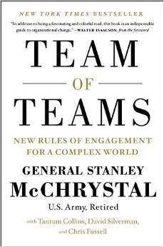
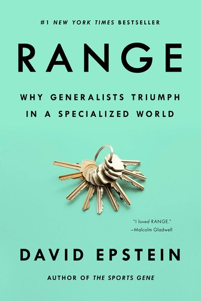

Módulo 06 / Apartado 1 de 6
Qué es orquestar, y qué no
Todo el mundo entiende el tropo de Ocean's Eleven y todo el mundo se salta la misma parte: que la orquestación no se da sola. Qué es, en qué se diferencia de dirigir un proyecto y cuáles son los tres libros que la cubren.
El tropo que todo el mundo conoce
Para robar el Bellagio hace falta la troupe entera de Ocean's Eleven: el hacker, el electricista, el contorsionista, el timador y el experto en explosivos. Lo hemos visto en cien películas. El Equipo A. Los Siete Magníficos. Todo el mundo entiende intuitivamente que un problema difícil necesita talentos distintos y complementarios.
Así que el concepto está asumidísimo en el imaginario popular. El problema no es ese. El problema es lo que el tropo se salta:
La orquestación, mágicamente, «se da». Es un deus ex machina en forma de talento sobrenatural el que Danny Ocean, o el coronel Hannibal Smith, resultan ser orquestadores naturales.
En las películas el equipo se junta y funciona. Alguien reparte tareas en un montaje de dos minutos con música y ya está. Eso es exactamente la parte que no existe. Es donde está todo el trabajo y donde fracasa casi todo.
Un director de orquesta se pasa del orden de veinticinco años estudiando antes de poder ejercer con solvencia. No es carisma. Es un oficio con una curva de aprendizaje larguísima, y aun así todo el mundo asume que la versión organizativa del mismo trabajo se improvisa.
Recuenco lo compara con otra cosa: hay estanterías enteras de libros sobre gestión de proyectos y gestión de riesgos, y casi nada sobre orquestación cognitiva y gestión de egos en equipos transdisciplinares. Dice que lleva años esperando el libro definitivo, y que igual lo acaba escribiendo él.
Orquestar no es dirigir un proyecto
Esta distinción es la que hay que llevarse del apartado, y él la hace con una franqueza que se agradece porque ha sido las dos cosas:
Y de ahí sale la imagen con la que cierra la turra, que es la que hay que tener en la cabeza cuando una empresa pide tecnología: el emperador te ha pedido una sinfonía para la inauguración de su teatro, y tú estás tan encantado con el sonido de tu nuevo Stradivarius que has decidido escribir una pieza solo para él.
La tríada de la orquestación cognitiva
Aquí viene lo mejor de este módulo, y es una cosa que Recuenco nombra de pasada en una turra y que no está desarrollada en ningún sitio. Dice que las demandas de la orquestación cognitiva se cubren con tres libros, y los llama la tríada:

El libro de esto Team of Teams: New Rules of Engagement for a Complex WorldEl libro que Recuenco da como referencia de orquestación cognitiva. McChrystal mandaba el mando conjunto de operaciones especiales estadounidense y se encontró con unidades de élite —Rangers, SEALs, inteligencia— que no compartían información y se miraban con recelo. Su tesis: contra una red no puedes poner una jerarquía, tienes que convertirte tú en red. Comparte información hasta el punto de que resulte incómodo, y baja la decisión al que tiene el problema delante — Stanley McChrystal · 2015
En la turra, Recuenco resume Team of Teams diciendo que va de cómo se alinearon los distintos cuerpos de élite «para lograr zumbarse a Bin Laden». No es eso.
El libro va de la campaña del mando conjunto de operaciones especiales contra Al Qaeda en Irak, entre 2003 y 2008, con McChrystal al frente. La operación que mató a Bin Laden fue en 2011, en Pakistán, y McChrystal ya no estaba en ese puesto.
El error no toca la tesis del libro ni el argumento por el que lo cita, que es correcto. Pero si vas a hablar del libro, habla de Irak.
Lo que McChrystal describe encaja exactamente con lo que ya has visto en los módulos anteriores: es el quinto principio de alta fiabilidad del módulo 4 —la decisión baja al que sabe— aplicado a una guerra. Y su instrumento principal es lo que llama shared consciousness: reuniones diarias de miles de personas donde se comparte todo con todos, incluida la información que la doctrina decía que había que compartimentar.

El libro de esto Range: Why Generalists Triumph in a Specialized WorldLa otra pata. Epstein distingue entre entornos amables —reglas estables, retroalimentación rápida y clara, como el ajedrez o el golf— donde la especialización temprana gana, y entornos crueles —reglas que cambian, retroalimentación tardía o engañosa— donde gana quien ha probado muchas cosas. Un problema complejo es siempre un entorno cruel, y por eso el equipo no puede ser de especialistas puros — David Epstein · 2019
Lo que orquestar exige de verdad
La turra lo enumera sin adornos, y merece la pena leerlo como una lista de tareas y no como una declaración de intenciones:
Dos velocidades, dos vocabularios y dos ideas de qué es urgente. Si no las traduces, se ignoran mutuamente con toda cordialidad.
No para hacer el trabajo de nadie, sino para saber cuándo dos personas están diciendo lo mismo con palabras distintas, que pasa constantemente.
Nadie va a colaborar por buena voluntad. Colabora si el puente existe y si cruzarlo le sale a cuenta — que es el módulo 5.
Ojo con la palabra incompatibles: no dice «alinear agendas», que es lo que se promete siempre. Dice tejerlas sin que dejen de ser incompatibles. Es otra cosa y es mucho más difícil.
Y una última cosa que conviene tener presente todo el módulo. Recuenco cuenta que en el programa oficial lo que él evalúa de los grupos de trabajo no es solo el entregable. Es la capacidad de ser funcional cuando todo el mundo alrededor deja de serlo. Siempre hay un par de grupos que no presentan nada porque se han liado a hostias, y un par que hacen trabajos profesionales. Y no es mala suerte: es el material del curso apareciendo en el curso.
Fuentes de este apartado
Las turras de las que sale
Corta y fundacional. Es de las primeras del corpus y define el concepto entero: el tropo de Ocean's Eleven y lo que se salta, los veinticinco años del director de orquesta, la diferencia con el project management y los dos libros que ya entonces señalaba como lo mejor que había encontrado. Termina con la imagen del Stradivarius y la sinfonía que nunca se escribe.
Una sutileza en la orquestación cognitiva: la sincronización de pedaladaTurra · 43 tweets · feb 2022De aquí sale la tríada —Range, Team of Teams y Belbin— nombrada entre paréntesis y sin desarrollar. Se retoma entera en el apartado 3, porque el grueso va de acompasar la pedalada y del síndrome del pato. Aquí importa por la lista de libros y por la afirmación de que al programa oficial le falta tiempo de orquestación cognitiva.
La construcción de equipos CPSTurra · 35 tweets · sep 2020El hilo al que las otras dos remiten constantemente cuando dicen «esto ya lo conté». Va de cómo se monta un equipo para un problema concreto y de por qué ese equipo lleva dentro las semillas de su propia destrucción. Es el prólogo natural del apartado siguiente.
Los libros
La referencia de orquestación cognitiva del corpus, y una de las sesiones inspiracionales del programa oficial. Cuidado con el resumen que circula: va de Al Qaeda en Irak entre 2003 y 2008, no de la operación contra Bin Laden. La tesis —contra una red, conviértete en red— es sólida y está contada con casos.
Range: Why Generalists Triumph in a Specialized WorldDavid Epstein · 2019La distinción entre entornos amables y entornos crueles es de las cosas más útiles del módulo, y explica por qué el debate especialista contra generalista está mal planteado: depende del entorno, y un problema complejo siempre es del segundo tipo. Se lee muy bien.
 Management Teams: Why They Succeed or FailMeredith Belbin · 1981
Management Teams: Why They Succeed or FailMeredith Belbin · 1981La tercera pata de la tríada. Los nueve roles de equipo y, sobre todo, el experimento del que sale el síndrome Apolo. Se desarrolla entero en el apartado siguiente; aquí queda anotado para que la tríada esté completa.